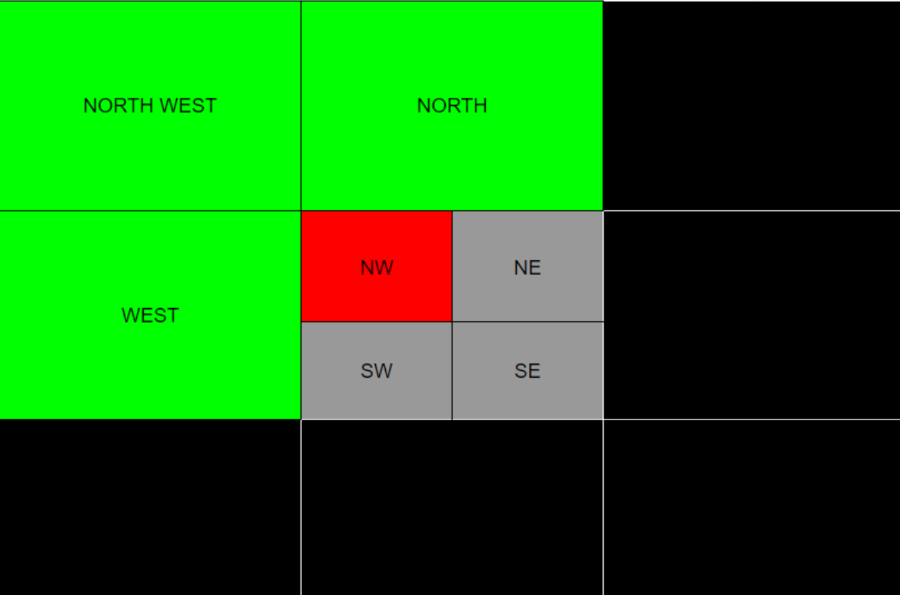

Void Glitch
Notice: The void glitch generally involves saving within the void, which means there is a chance of a save file becoming unusable if steps aren't followed properly. Before attempting these glitches, ensure it isn't an important save file, or at the very least, make a backup before you try anything fancy.
Introduction
The Void Glitch is a piece of Pokemon history. Having been discovered in the age of Action Replays, it generally gets overshadowed as a method of obtaining Mythical Pokemon in Diamond and Pearl. However, for those who never had one, it was one of the only ways of grabbing some of the mythicals that had past events or were simply never released.
While the Void Glitch exists in Diamond, Pearl, Platinum, and HG/SS, in all games after Diamond and Pearl the developers had the foresight to add invisible walls within the void to prevent any ways of moving around. Due to this, this guide will focus solely on Diamond and Pearl.
How the Overworld Works
Each map within the overworld is broken into 32x32 tile groups, called “chunks”. When moving around, only 4 of these chunks are loaded and visible at any given time, those being: the one the player is in, as well as the closest 3 chunks depending on what quadrant of the current chunk the player is in.
For example, if the player is within the North West Quadrant of the current chunk, the chunks North, West, and Northwest of the current chunk will be loaded.

As the player moves throughout the overworld, they will pass over “load lines” which will load the next chunks in a given direction while unloading ones behind them.
Tweaking
While walking or running the player will experience the overworld seamlessly, as the chunks will load and unload faster than the player can reach them. However, with the addition of the bike and gears, it is possible to move over load lines faster than the chunks themselves can load, which can lead to a black void, white void, game freeze, and more.
While there have been many methods found over the years for tweaking, the one mentioned here is one of the most reliable and easiest.
(gif or some sort of design showing how to tweak in Jubilife)
Once done correctly, a chunk will be incorrectly loaded. From here, the player can use the Void Glitch.
Void Glitch
The basis of this glitch involves the player tweaking a black void onto a chunk that normally contains a building, positioning themselves one step above the entrance, reloading the graphics, and entering the building from the wrong side. When stepping through the door, the player will be pushed out into the void area outside of the building.
From here the possibilities are almost endless, and some very hard working people have been charting different routes through the void in order to find legendaries, mythicals, and an assortment of other things. At the forefront of this is RETIRE, who was kind enough to show me some of the latest routes that had been researched with the Void Glitch.
With the boring stuff out of the way, here are some things you can do with the Void Glitch.